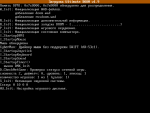
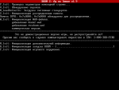
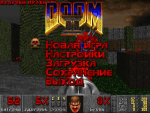
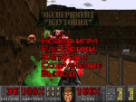

Версия проекта для DOS обладает несколько меньшим функционалом нежели основной проект, но так или иначе, это версия практически полностью идентична оригинальным версиям игр, выпущенным в 1993-1994 годах. Свершилось! Навигация:
Версия для DOS основана на порте PCDoom от Алексея Хохолова (Alexey Khokholov) и Doom Vanille от Александрэ-Ксавье Лабонт-Ламуре (Alexandre-Xavier Labonte-Lamoureux), используются значительные улучшения из порта Crispy Doom от Фабиана Греффрата (Fabian Greffrath). Одобрение на распространение получено от всех авторов. Проект, все его материалы и исходные коды доступны по лицензии GNU GPL v2. Проект представляет из себя максимально возможный русскоязычный перевод игр:
Установка и запуск Минимальные системные требования:
С помощью штатной команды "-iwad". Пример запуска DOOM I: RUSDOOM.EXE -iwad DOOM.WAD Если параметр явно не указан и присутствует несколько IWAD-файлов, автоматически запустится DOOM II. Если присутствует только один IWAD-файл, то он запустится автоматически. Скриншоты Все скриншоты кликабельны.     Новые параметры командной строки -iwad Возможность выбора IWAD-файла для запуска игры. -vanilla Активация "ванильного" режима, отключающего почти все украшательства, такие как цветная кровь, текст с тенями и другие. Не затрагивает увеличение статических лимитов движка и исправление багов. -mb Возможность явно указать сколько оперативной памяти может использовать игра под свои нужды. Стандартное и минимальное значение равно 2, максимальное 64. Пример использования: rusdoom.exe -mb 32 -dm3 Активация режима игры Дефматч 3.0. Оружие будет оставаться после поднятия, все остальные предметы будут исчезать и появляться заново через 30 секунд. Рекомендуемые параметры DOSBox Для получения наиболее качественной полноэкранной картинки при игре через эмулятор DOSBox, рекомендую установить следующие параметры в конфигурационном файле dosbox.conf:
fullresolution=fixed
Если русские символы отображаются кракозяблами, укажите русскую раскладку в параметре keyboardlayout:
keyboardlayout=RU
Для включения музыки в формате Gravis UltraSound, разрешите его использование:
gus=true
Также понадобятся патчи GUS, ознакомьтесь с инструкцией по их установке для DOSBox.
Скачать Ссылки на архив с портом и исходные коды доступны в основном разделе скачивания. |
{kind=link}
{kind=link}
{kind=link}
{kind=link}